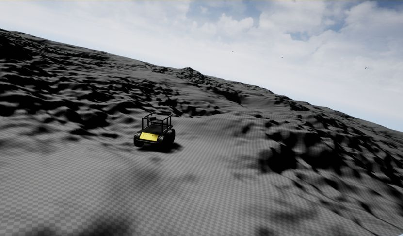
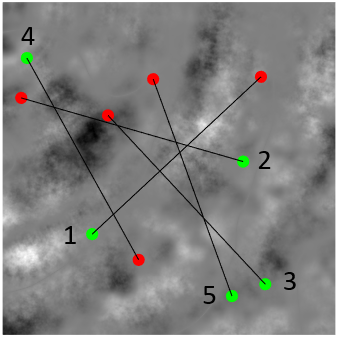
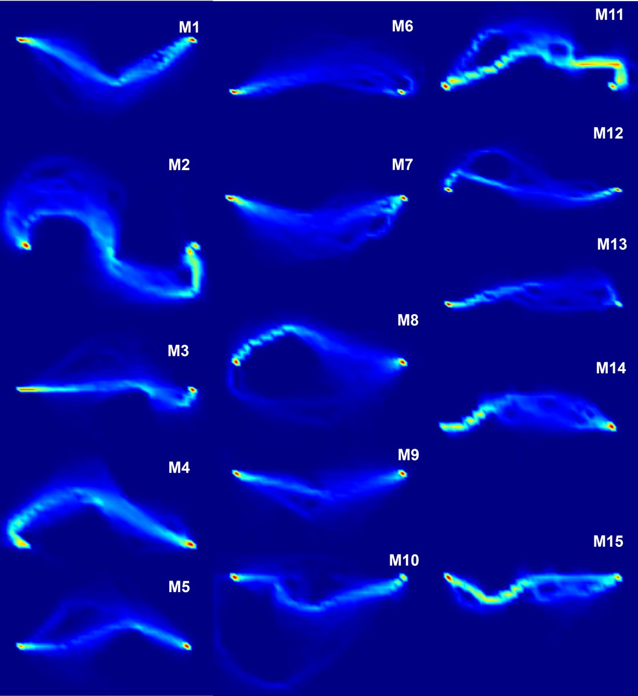
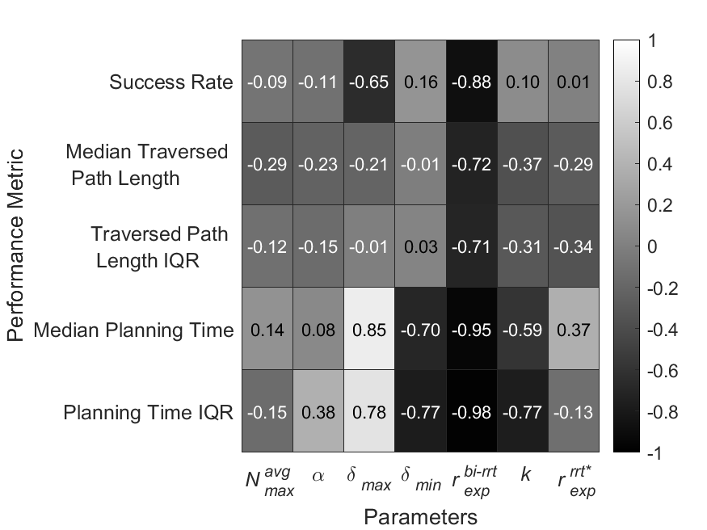
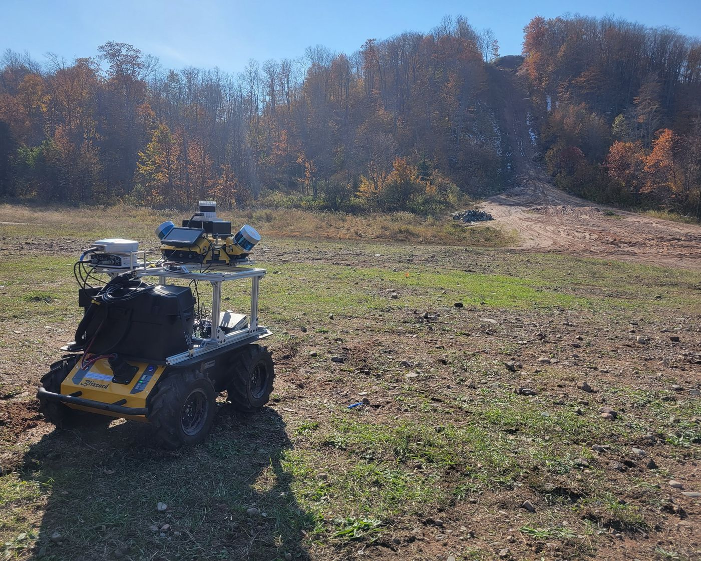
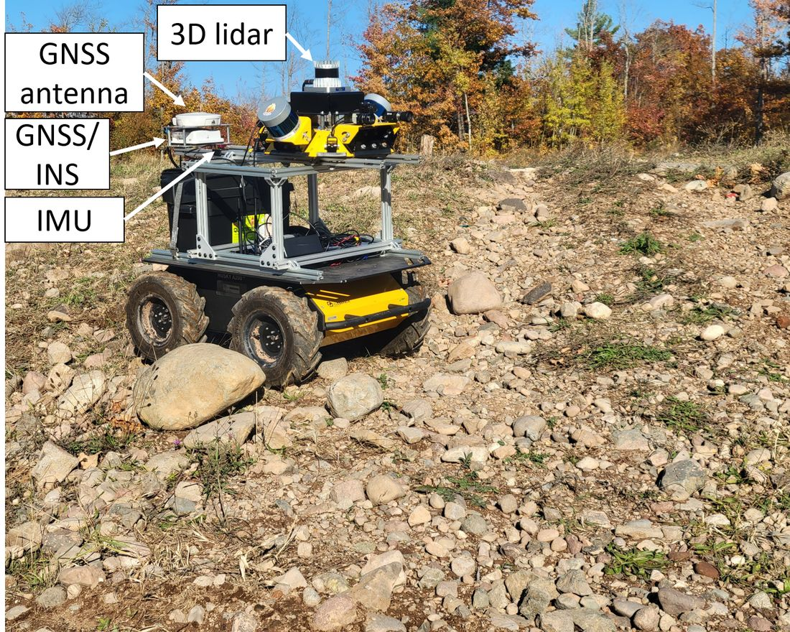

Method
How MUONS plans
Costmaps flatten terrain into 2D or 2.5D cells. They cannot say that a slope is fine head-on but a rollover from the side, and they struggle with overhangs and multi-level ground. MUONS, inspired by Krüsi et al.'s Driving on Point Clouds, plans in 3D on the lidar map itself. Every candidate waypoint is checked for whether the robot could actually stand there.
- Bi-RRTTrees grown from start and goal find a kinematically feasible path quickly.
- RRT*Rewiring shortens that first path.
- Trajectory optimizationA local optimizer refines it for traversability, curvature and length.
- Pure pursuitThe robot tracks a look-ahead point on the final path.
Terrain assessment runs inside every planning stage. It fits a surface normal to a robot-sized patch of points to infer roll and pitch at each waypoint, and rejects ground rougher than a set limit.
Simulation campaign
30,000 trips across rough, randomly generated terrain
A simulated Husky drives in Unreal Engine, which models the physics of the vehicle on the terrain. Terrains are generated with a multifractal method, so each new map has the same roughness statistics but different features. On each of three terrains we picked five random start–goal pairs 35 m apart. Every mission was run 100 times with each of 20 planner parameter sets.


- Reliable. MUONS reached the goal in 0.98 of trials. Compared with driving the straight line, success rose by 0.23 to 0.47 depending on the terrain.
- A predictable detour. The extra distance needed to get there is close to exponentially distributed, with a mean of about 7 m on a 35 m trip.
- Mission beats roughness. With MUONS, rougher terrain cost only 0.01 in success rate (0.25 for the straight line). Which start and goal you pick matters more.
- Tune broadly. Parameters tuned for one mission did not carry over to others, even on the same terrain. Tune for the platform across many terrains and missions.

Sim-to-real
Simulation predicts the field
We ranked the 20 parameter sets in simulation and took the best (PS3), a typical one (PS13) and the worst (PS18) to rocky, sloped ground. There we ran two 34 m tasks five times per set, with roll and pitch limited to ±0.15 rad. Absolute numbers differ because field maps are smaller and run on different hardware, so a median plan took about 3 s in the field against 35 s in simulation. The ratios between parameter sets nearly match.
Median performance relative to the typical set (PS13)
Show as a table
| Ratio of medians | Simulation | Field |
|---|---|---|
| Planning time, best ÷ typical (PS3 / PS13) | 0.27 | 0.28 |
| Planning time, worst ÷ typical (PS18 / PS13) | 4.44 | 5.46 |
| Excess path length, best ÷ typical (PS3 / PS13) | 0.66 | 0.60 |
| Excess path length, worst ÷ typical (PS18 / PS13) | 3.55 | 1.76 |
Ratios as reported in the paper. Excess path length is the distance driven beyond the straight line.
One knob matters most
Of the seven tuning parameters, the expansion radius of the first Bi-RRT stage correlates most strongly with every metric (Spearman partial ρ from −0.71 to −0.98). A larger radius finds paths faster, shorter and more consistently, at some cost in success rate. It shapes the first path that every later stage refines.
The finding supports Monte Carlo simulation for tuning off-road planners. A short field campaign can then confirm the result, instead of a long one discovering it.

Theory · IEEE RA-L
How far from the shortest path?
A sample-based planner trades feasibility (finding any path) against optimality (finding a short one). We model that trade-off directly. At each of n steps the planner picks the best of m random choices. With probability set by its goal bias c, the step adds nothing, and otherwise it adds some excess length, at most b. Summing the steps gives a closed form for the distribution of excess path length (EPL) in terms of the planner's own parameters.
A perfect step only passes earlier errors along, while an imperfect one adds to them. That is why the result is a binomial blend of gamma distributions. It collapses to a spike at zero as goal bias rises (c → 1), as choices per step grow (m → ∞), or as obstacles vanish (b → 0). With no goal bias, as in PRM, it becomes a pure gamma distribution, and for long paths it tends to a normal one.
Theorem 1 gives a one-line tuning rule. If the odds that a step adds nothing, (1 − p)/p, are at least (n − 1)/2, then the most likely excess path length is zero.
The model fits RRT* and PRM in open 2D tests and an RRT-based planner on the simulated Husky across 15 terrains. Between the best and worst Husky parameter sets (Bi-RRT expansion radius 1.84 m against 0.24 m, PS3 and PS18 above), only n had to change. That links the theory to the knob that mattered most in the field study.
- n
- samples in the path, roughly the start-to-goal distance ÷ expansion radius
- m
- choices considered per step
- c
- chance a sample adds no excess length (goal bias)
- b
- largest excess a single step can add
Try it: tune a planner
Preset values are illustrative, not the paper's fitted parameters. "Large" and "small radius" put a 35 m trip at expansion radii of 1.84 m and 0.24 m.
Field testing
On real ground
The field robot is a Clearpath Husky A200 with an Ouster OS1-64 lidar, a VectorNav VN-100 IMU and NovAtel RTK GNSS/INS. Maps come from LIO-SAM on a teleoperated survey drive, and MUONS then plans on that map. Across rocks, gravel and grass, with slopes that rule out the straight line, it completed all 30 field trials.


Next
Code release is in preparation. Next steps include tuning planner parameters automatically in randomized simulation, and planning for costs other than distance, such as risk, time or energy. We expect the theory to extend to these, since it makes no geometric assumptions.
Papers
Read more
- Performance Characterization of a Point-Cloud-Based Path Planner in Off-Road TerrainC. D. Majhor and J. P. Bos. Journal of Field Robotics 43(2), 695–716, 2026. doi:10.1002/rob.70059
- Can We Get There Faster: Tuning Sample-Based Path PlannersC. Cornwall, C. Majhor, L. Schexnaydre, I. Mattson and J. P. Bos. IEEE Robotics and Automation Letters 11(6), 7238–7245, 2026. doi:10.1109/LRA.2026.3685923
- Driving on Point Clouds: Motion Planning, Trajectory Optimization, and Terrain Assessment in Generic Nonplanar EnvironmentsP. Krüsi, P. Furgale, M. Bosse and R. Siegwart. Journal of Field Robotics 34(5), 940–984, 2017. doi:10.1002/rob.21700 · the work that inspired MUONS
- Multifractal Terrain Generation for Evaluating Autonomous Off-Road Ground VehiclesC. D. Majhor and J. P. Bos. Journal of Autonomous Vehicles and Systems 5(2), 021003, 2025. doi:10.1115/1.4067769
- Unreal as a Simulation Environment for Off-Road AutonomyP. Young, S. Kysar and J. P. Bos. Proc. SPIE 11415, 2020. doi:10.1117/12.2559006
@article{majhor2026performance,
title = {Performance Characterization of a Point-Cloud-Based Path Planner in Off-Road Terrain},
author = {Majhor, Casey D. and Bos, Jeremy P.},
journal = {Journal of Field Robotics},
volume = {43}, number = {2}, pages = {695--716}, year = {2026},
doi = {10.1002/rob.70059}
}
@article{cornwall2026faster,
title = {Can We Get There Faster: Tuning Sample-Based Path Planners},
author = {Cornwall, Chaz and Majhor, Casey and Schexnaydre, Logan and Mattson, Ian and Bos, Jeremy P.},
journal = {IEEE Robotics and Automation Letters},
volume = {11}, number = {6}, pages = {7238--7245}, year = {2026},
doi = {10.1109/LRA.2026.3685923}
}
Supported by the SMART Scholarship Program (USD/R&E, National Defense Education Program BA-1) and by the Automotive Research Center under Cooperative Agreement W56HZV-19-2-0001 with the U.S. Army CCDC Ground Vehicle Systems Center. These views do not represent those of the sponsors. Thanks also to Sam Kysar, Parker Young, Zach Jeffries, Ian Mattson and Jake Carter.